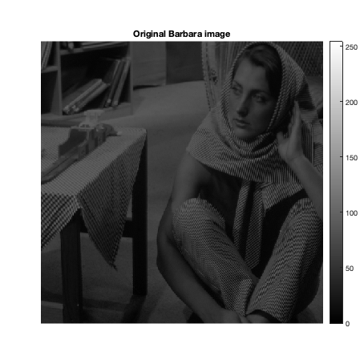
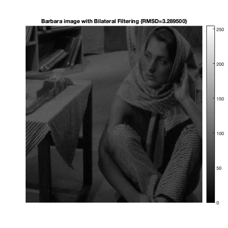
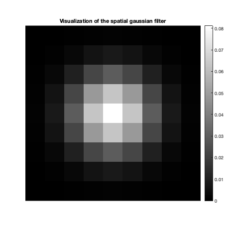
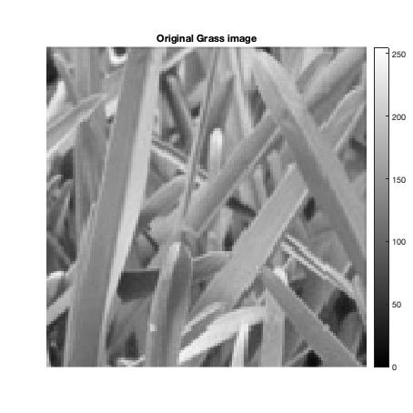
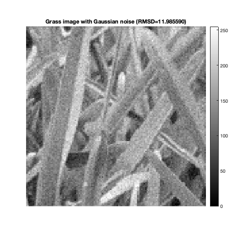
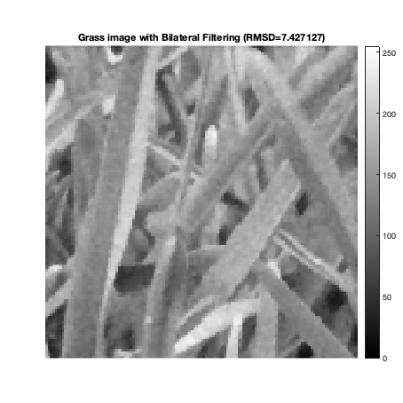
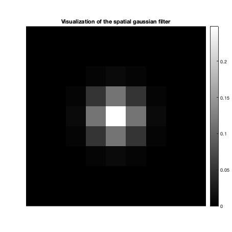
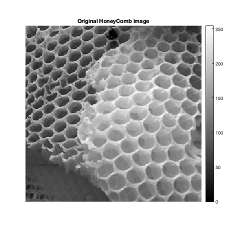
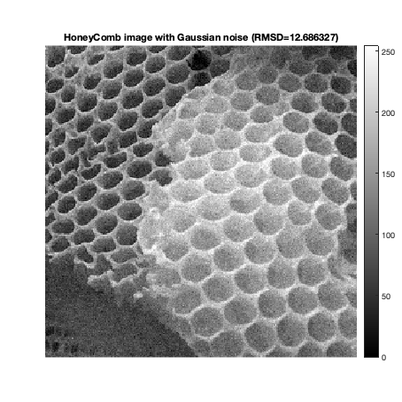
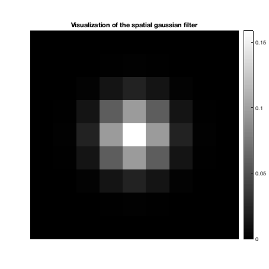

Contents
MyMainScript
clc; clear all; close all; warning('off', 'all'); tic;
CS 663: Digital Image Processing, IIT Bombay (Autumn 2020)
Aman Kansal, Ansh Khurana, Kushagra Juneja
Assignment 2
%%Q2 % Edge-preserving Smoothing using Bilateral Filtering. % Assuming equal dimensions % The best values for the hyperparamters were calculated using grid % search, uncomment the grid search function call to perform the search.
Hyperparameters
Ranges represent the range in which grid search was performed.
window_size = 9; i_range = 8:2:42; s_range = 0.3:0.1:1.5;
Implementation
showBest and performGridSearch internally make calls to myBilateralFiltering which has the implementation of the algorithm. We use images with intensities in range [0 255] and thus the corresponding RMSD values are according to this range.
Barbara image
img_barbara = load('../data/barbara.mat');
img_barbara = im2double(img_barbara.imageOrig);
Grid Search
[sigma_intensity, sigma_spatial] = performGridSearch(img_barbara, 'Barbara', i_range, s_range, window_size);
Best values
sigma_intensity = 10;
sigma_spatial = 1.4;
showBest(img_barbara, 'Barbara', sigma_intensity, sigma_spatial, window_size)
toc;
Optimal parameters: sigma_spatial = 1.400000 sigma_intensity = 10.000000 obtaining RMSD = 3.289500 sigma_spatial*0.9 = 1.260000,sigma_intensity = 10.000000, obtained RMSD = 3.296427 sigma_spatial*1.1 = 1.540000,sigma_intensity = 10.000000, obtained RMSD = 3.290206 sigma_spatial = 1.400000,sigma_intensity*0.9 = 9.000000, obtained RMSD = 3.313823 sigma_spatial = 1.400000,sigma_intensity*0.9 = 11.000000, obtained RMSD = 3.303038 Elapsed time is 9.075768 seconds.  
Grass Image
img_grass = imread('../data/grass.png');
img_grass = im2double(img_grass)*255;
Grid Search
[sigma_intensity, sigma_spatial] = performGridSearch(img_grass, 'Grass', i_range, s_range, window_size);
Best values
sigma_intensity = 42;
sigma_spatial = 0.8;
showBest(img_grass, 'Grass', sigma_intensity, sigma_spatial, window_size);
toc;
Optimal parameters: sigma_spatial = 0.800000 sigma_intensity = 42.000000 obtaining RMSD = 7.427127 sigma_spatial*0.9 = 0.720000,sigma_intensity = 42.000000, obtained RMSD = 7.489999 sigma_spatial*1.1 = 0.880000,sigma_intensity = 42.000000, obtained RMSD = 7.475277 sigma_spatial = 0.800000,sigma_intensity*0.9 = 37.800000, obtained RMSD = 7.460776 sigma_spatial = 0.800000,sigma_intensity*0.9 = 46.200000, obtained RMSD = 7.434851 Elapsed time is 12.297092 seconds.   
HoneyComb image
img_honey = imread('../data/honeyCombReal.png');
img_honey = im2double(img_honey)*255;
Grid Search
[sigma_intensity, sigma_spatial] = performGridSearch(img_honey, 'HoneyComb', i_range, s_range, window_size);
Best values
sigma_intensity = 38;
sigma_spatial = 1;
showBest(img_honey, 'HoneyComb', sigma_intensity, sigma_spatial, window_size);
toc;
Optimal parameters: sigma_spatial = 1.000000 sigma_intensity = 38.000000 obtaining RMSD = 7.306699 sigma_spatial*0.9 = 0.900000,sigma_intensity = 38.000000, obtained RMSD = 7.317089 sigma_spatial*1.1 = 1.100000,sigma_intensity = 38.000000, obtained RMSD = 7.367312 sigma_spatial = 1.000000,sigma_intensity*0.9 = 34.200000, obtained RMSD = 7.331447 sigma_spatial = 1.000000,sigma_intensity*0.9 = 41.800000, obtained RMSD = 7.344440 Elapsed time is 15.963589 seconds.  